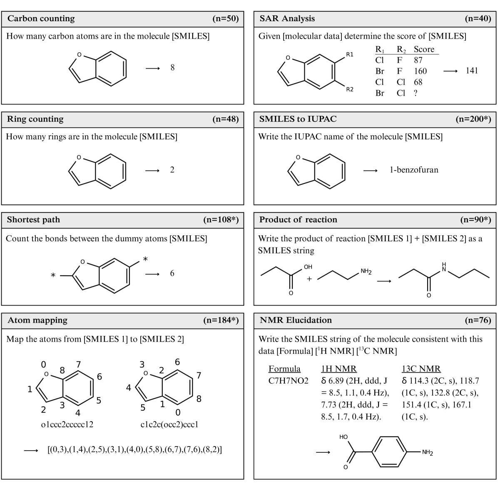
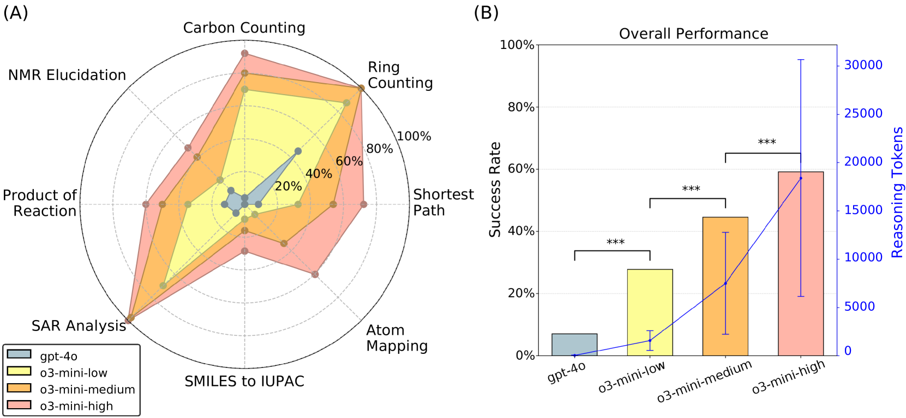
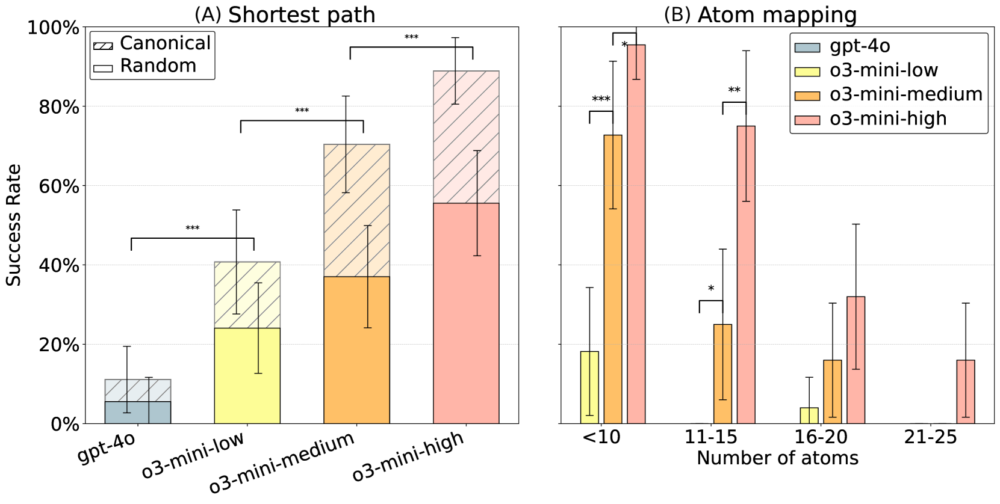
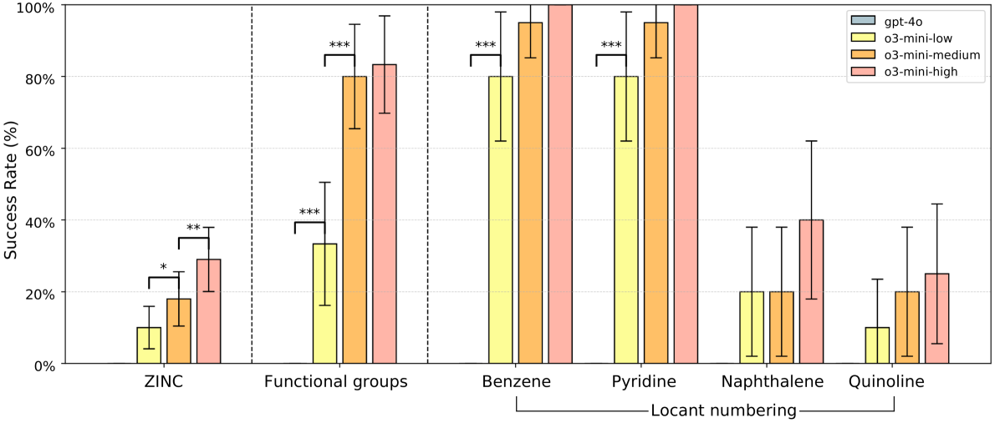
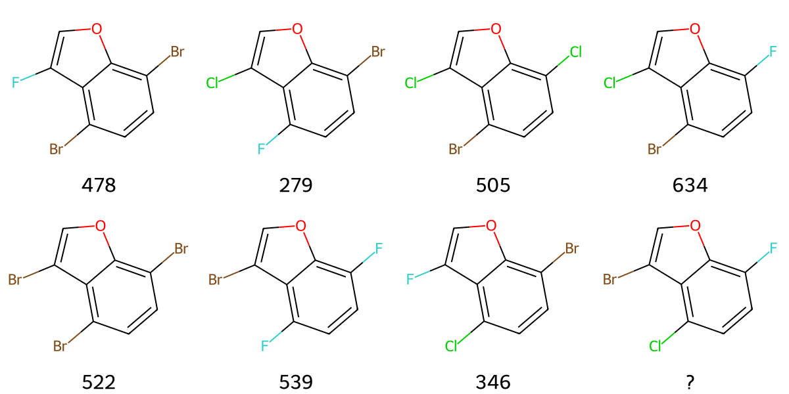
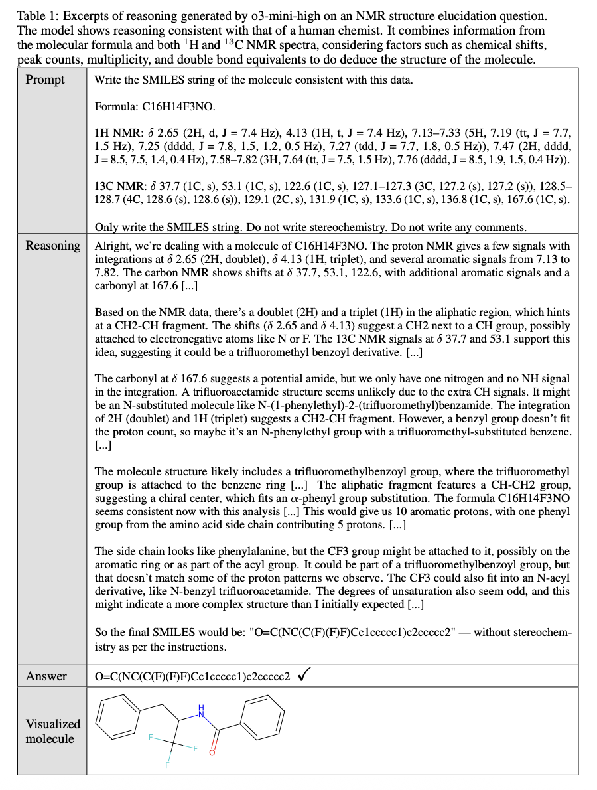

ChemIQ: Assessing the Chemical Reasoning Abilities of Large Language Models
Authors: - Nicholas T. Runcie (Department of Statistics, University of Oxford) - Charlotte M. Deane (Department of Statistics, University of Oxford) - Fergus Imrie (Department of Statistics, University of Oxford)
Date: 2025-05-12 · arXiv: 2505.07735v1
Why did I choose this paper?
- Interested in the potential of LLMs to interpret and extract chemical information from scientific texts.
- Evaluating the impact of Cheminformatics MCP server (tools) on enhancing LLMs’ chemical understanding, compared to reasoning-enabled LLMs.
- Curating a set of Chemistry focused tasks that current LLMs struggle with, to inform the development of tool-augmented or agentic workflows for chemical data extraction.
Motivation
- Limited understanding of LLM chemical capabilities: Previous studies showed LLMs struggle with molecular structure interpretation, restricting their use in chemistry
- Gap in evaluation methods: Existing chemistry benchmarks primarily use multiple-choice formats that can be solved through elimination rather than true chemical reasoning
- Need for molecular comprehension: LLMs that can directly interpret molecular structures would substantially advance both standalone LLMs and LLM-based systems
- Emergence of reasoning models: Recent development of reasoning models (o1, o3-mini, DeepSeek R1) showing substantial improvements in mathematics and science benchmarks
- Potential for scientific discovery: LLMs could aid in generating novel hypotheses, planning experiments, and interpreting data if they develop sufficient chemical understanding
Terminology
- ChemIQ: Novel benchmark consisting of 796 questions assessing core concepts in organic chemistry, focused on molecular comprehension and chemical reasoning
- SMILES (Simplified Molecular Input Line Entry System): Text-based molecular representation format used throughout the benchmark
- Reasoning models: LLMs explicitly trained to optimize Chain-of-Thought (CoT) reasoning across multiple domains (e.g., o3-mini, o1, DeepSeek R1)
- Canonical vs. Randomized SMILES: Different representations of the same molecule - canonical follows standard rules, randomized uses different atom ordering
- IUPAC naming: International Union of Pure and Applied Chemistry standardized naming convention for molecules
- NMR structure elucidation: Process of determining molecular structure from Nuclear Magnetic Resonance spectroscopy data
- SAR (Structure-Activity Relationship): Analysis of how molecular structure affects biological activity or properties
Main research questions
- Can reasoning models directly perform chemistry tasks?
- Investigation of whether LLMs can understand molecular structures without external tools
- What is the impact of reasoning on chemical intelligence?
- Comparison of reasoning models (o3-mini low/medium/high) vs. non-reasoning models (GPT-4o)
- Can LLMs interpret molecular representations?
- Assessment of ability to extract graph-based features from SMILES strings
- Evaluation of atom counting, ring counting, shortest path determination, and atom mapping
- Can LLMs translate molecular structures to chemical concepts?
- Testing conversion of SMILES strings to IUPAC names (historically near-zero accuracy for LLMs)
- Do LLMs demonstrate advanced chemical reasoning?
- Evaluation of structure-activity relationship analysis
- Assessment of reaction prediction capabilities
- Testing of NMR structure elucidation from spectroscopic data
Methods
Benchmark Design (ChemIQ)
- 796 questions across eight distinct categories
- Algorithmically generated questions allowing for reproducibility and expansion
- Short-answer format requiring construction rather than selection of responses
- Three core competencies tested:
- Interpreting molecular structures
- Translating molecular structures to chemical concepts
- Reasoning about molecules using chemical theory
Question Categories
- Carbon counting (n=50): Count carbon atoms in SMILES strings
- Ring counting (n=48): Determine number of rings in molecules
- Shortest path (n=108): Calculate bonds between dummy atoms
- Atom mapping (n=184): Map atoms between different SMILES representations
- SMILES to IUPAC (n=200): Generate IUPAC names from SMILES
- SAR Analysis (n=40): Predict molecular scores from structure-activity data
- Product of reaction (n=90): Predict reaction products as SMILES
- NMR Elucidation (n=76): Generate SMILES from NMR spectroscopic data
 Figure 1: Question categories in the ChemIQ benchmark. The number of questions in each category is shown in the panel header, and * indicates the set contains 50% canonical and 50% randomized SMILES. Full prompts and reasoning excerpts generated by o3-mini can be found in Appendix D.
Models Evaluated
- GPT-4o (baseline non-reasoning model)
- o3-mini-low, o3-mini-medium, o3-mini-high (reasoning models with increasing reasoning effort)
Evaluation Metrics
- Success rate across question categories
- Reasoning token usage to assess computational cost
- Statistical significance testing using McNemar tests
Results
Overall Performance
- Reasoning models substantially outperformed non-reasoning models: o3-mini achieved 28%-59% accuracy vs. GPT-4o’s 7%
- Higher reasoning levels consistently improved performance across all tasks
- Clear correlation between reasoning effort and success rate
 Figure 2: Summary of model performance. Results show a trend that increased reasoning correlates with higher success rates. A summary of question prompts is provided in Figure 1, and full prompts with reasoning excerpts are listed in Appendix B. (A) Radar plot showing performance by question category. (B) Average success rate across all benchmark questions and the average number of reasoning tokens used per question. Vertical error bars show 95% confidence interval. Adjacent bars were compared using a one-tailed McNemar test. Significance levels are denoted as: ∗p < 0.05, ∗∗p < 0.01, and ∗∗∗p < 0.001.
Key Findings by Task Category
Molecular Structure Interpretation
- Carbon counting: o3-mini-high achieved 92% vs. GPT-4o’s 4%
- Ring counting: Perfect performance (100%) for medium and high reasoning models
- Shortest path: 89% accuracy for canonical SMILES, 56% for randomized SMILES
- Atom mapping: 52% accuracy, with performance decreasing for larger molecules
 Figure 3: (A) Models were prompted to find the shortest distance between two atoms in a SMILES string. Performance was substantially lower when prompted with random SMILES as opposed to canonical SMILES. (B) Models were given two randomized SMILES strings representing the same molecules, and were prompted to map the atoms from one to the other. Performance decreased for larger molecules. Vertical error bars show 95% confidence interval. Adjacent bars were compared using a one-tailed McNemar test. Significance levels are denoted as: ∗p < 0.05, ∗∗p < 0.01, and ∗∗∗p < 0.001.
SMILES to IUPAC Translation
- Historic breakthrough: First general-purpose LLM to demonstrate meaningful success
- o3-mini-high achieved 29% accuracy on ZINC dataset molecules
- Functional group identification: ~80% accuracy for common functional groups
- Locant numbering: High success for simple scaffolds (benzene, pyridine), lower for fused systems
 Figure 4: Performance on the SMILES to IUPAC questions. The o3-mini model can successfully write IUPAC names of some molecules. The GPT-4o model answered all questions incorrectly. ZINC molecules were sampled from the ZINC dataset; correctly named molecules are showed in Figure 8. Functional group questions were constructed by attaching 6 different functional groups to a benzene scaffold (Figure 6). Locant numbering questions were constructed by attaching 3 halogens to the listed scaffolds (Figure 7). Names were accepted as correct if they could be parsed to the intended molecule by the OPSIN tool [30]. Results shown are for canonical SMILES; see Table 3 and Table 5 for randomized SMILES. Vertical error bars show 95% confidence interval. Adjacent bars were compared using a one-tailed McNemar test. Significance levels are denoted as: ∗p < 0.05, ∗∗p < 0.01, and ∗∗∗p < 0.001.
Chemical Reasoning Tasks
- SAR analysis: Perfect performance (100%) for both medium and high reasoning models
- Reaction prediction: 56% accuracy for o3-mini-high vs. 18% for GPT-4o
- NMR structure elucidation: 74% accuracy for small molecules (≤10 heavy atoms)
 Figure 5: Example structure activity relationship question. Molecules were constructed by attaching three halogens at three positions on a benzene scaffold. Each substituent at each position was assigned a random integer value, and the total score was calculated as the sum of these individual values. The task is to determine the score of the unknown molecule.

Impact of SMILES Representation
- Canonical SMILES generally easier than randomized SMILES
- Performance drop of ~40% for shortest path questions with randomized SMILES
- Suggests reliance on heuristics rather than complete molecular graph parsing
Conclusion
Major Achievements
- Paradigm shift: Latest reasoning models now possess the capability to directly solve advanced chemistry problems without external tools
- SMILES to IUPAC breakthrough: First general-purpose LLM to generate valid IUPAC names (29% accuracy)
- Advanced reasoning demonstration: Models show reasoning processes similar to human chemists, particularly in NMR structure elucidation
- Scalable evaluation framework: ChemIQ provides a robust benchmark for future LLM chemistry assessment
Current Limitations
- Performance ceiling: Best model (o3-mini-high) achieved only 59% overall accuracy
- Molecular size constraints: Performance decreases significantly for larger molecules (>20 heavy atoms)
- Reliability concerns: Models not yet reliable enough for critical chemistry applications
- Representation sensitivity: Lower performance with randomized vs. canonical SMILES suggests incomplete molecular understanding
Future Implications
- Scientific discovery potential: LLMs could serve as general-purpose chemical reasoning agents
- Integration opportunities: Combination of formal theory and heuristic insights in single inference process
- Safety considerations: Need for proactive addressing of potential misuse in chemical threat production
- Research directions: Domain-specific models and LLM-tool augmentation likely to deliver significant performance gains
Transformational Impact
The emerging capabilities point to a new paradigm where LLMs integrate diverse information sources (patents, literature, domain knowledge) into context-aware decision-making, potentially transformational for data-limited chemical domains where conventional machine learning approaches are insufficient.